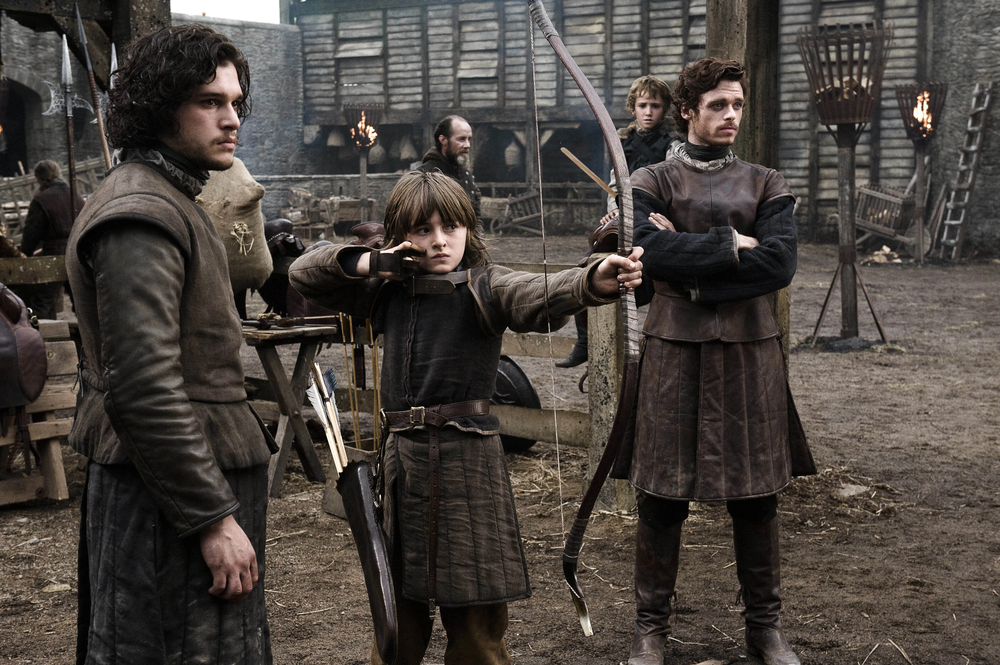
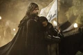

| EP |
Imagem |
Titulo |
Prévia |
| 21 |

|
"Valar Dohaeris" |
Jon é testado por um bárbaro, enquanto Tyrion exige recompensa.
Cersei organiza um jantar para a família real, e Daenerys busca
novos ares.
|
| 22 |
|
"Dark Wings, Dark Words" |
Sansa fala demais e dificulta ainda mais sua convivência com
Joffrey. Jaime encontra uma maneira de passar o tempo.
|
| 23 |
|
"Walk of Punishment" |
Jon é levado a um local mítico e, com o objetivo de criar um
poderoso exército, Daenerys faz uma proposta pelos escravos.
|
| 24 |
|
"And Now His Watch is Ended" |
Daenerys precisará abrir mão de algo valioso se quiser mesmo
fortalecer seu exército. Varys planeja vingança contra um antigo
adversário.
|
| 25 |
|
"Kissed by Fire" |
Sandor é julgado pelos deuses. Robb sofre uma traição, e Tyrion
percebe que um casamento pode custar muito caro.
|
| 26 |
|
"The Climb" |
Jon Snow tem um desafio enorme pela frente, e Robb Stark avalia
seu casamento para reparar o compromisso com Walder Frey.
|
| 27 |
|
"The Bear and the Maiden Fair" |
Daenerys envolve-se em mais uma transação. Tywin tem um conselho
a dar ao jovem Joffrey, e Melisandre revela um segredo a Gendry.
|
| 28 |

|
"Second Sons" |
Tyrion e Sansa passam a noite juntos. Dany é apresentada a Mero,
líder de um grupo de mercenários que fazem qualquer coisa por
dinheiro.
|
| 29 |
|
"The Rains of Castamere" |
Robb pede perdão a Walder Frey. Daario apresenta seu plano para
invadir Yunkai, e Jon enfrenta seu maior desafio.
|
| 30 |

|
"Mhysa" |
Joffrey desafia Tywin, enquanto Bran conta uma história
sobrenatural. Já na ilha, a compaixão vem de onde menos se
espera.
|